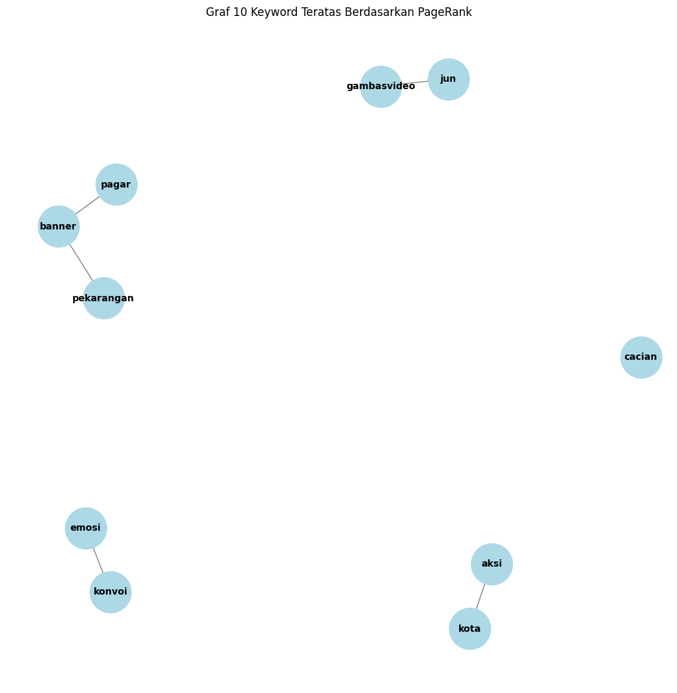

UTS
Nama: RAHMA NURHALIZA
NIM : 210411100176
Kelas : PPW A
UTS (Keyword Extraction)#
from google.colab import drive
drive.mount('/content/drive')
---------------------------------------------------------------------------
KeyboardInterrupt Traceback (most recent call last)
<ipython-input-1-d5df0069828e> in <cell line: 2>()
1 from google.colab import drive
----> 2 drive.mount('/content/drive')
/usr/local/lib/python3.10/dist-packages/google/colab/drive.py in mount(mountpoint, force_remount, timeout_ms, readonly)
98 def mount(mountpoint, force_remount=False, timeout_ms=120000, readonly=False):
99 """Mount your Google Drive at the specified mountpoint path."""
--> 100 return _mount(
101 mountpoint,
102 force_remount=force_remount,
/usr/local/lib/python3.10/dist-packages/google/colab/drive.py in _mount(mountpoint, force_remount, timeout_ms, ephemeral, readonly)
135 )
136 if ephemeral:
--> 137 _message.blocking_request(
138 'request_auth',
139 request={'authType': 'dfs_ephemeral'},
/usr/local/lib/python3.10/dist-packages/google/colab/_message.py in blocking_request(request_type, request, timeout_sec, parent)
174 request_type, request, parent=parent, expect_reply=True
175 )
--> 176 return read_reply_from_input(request_id, timeout_sec)
/usr/local/lib/python3.10/dist-packages/google/colab/_message.py in read_reply_from_input(message_id, timeout_sec)
94 reply = _read_next_input_message()
95 if reply == _NOT_READY or not isinstance(reply, dict):
---> 96 time.sleep(0.025)
97 continue
98 if (
KeyboardInterrupt:
import pandas as pd
df = pd.read_csv("/content/drive/MyDrive/PPW/tugas/1berita.csv")
#df = pd.read_csv("/content/drive/MyDrive/PPW/tugas/2_Kategoriberita-CNN.csv")
df.head(1)
| judul | berita | tanggal | kategori | |
|---|---|---|---|---|
| 0 | 2 Oknum Suporter Persija Jadi Tersangka Perusa... | Polisi menetapkan dua orang oknum suporter Per... | Rabu, 25 Sep 2024 01:00 WIB | Olahraga |
Preprossesing#
import re
import pandas as pd
import nltk
from nltk.corpus import stopwords
# Pastikan NLTK stopwords sudah diunduh
nltk.download('stopwords')
# Fungsi untuk menghapus URL dari teks.
def remove_url(text):
url = re.compile(r'https?://\S+|www\.\S+')
return url.sub(r'', text)
# Fungsi untuk menghapus tag HTML dari teks.
def remove_html(text):
html = re.compile(r'<.*?>')
return html.sub(r'', text)
# Fungsi untuk menghapus emoji dari teks.
def remove_emoji(text):
emoji_pattern = re.compile("["
u"\U0001F600-\U0001F64F"
u"\U0001F300-\U0001F5FF"
u"\U0001F680-\U0001F6FF"
u"\U0001F1E0-\U0001F1FF"
"]+", flags=re.UNICODE)
return emoji_pattern.sub(r'', text)
# Fungsi untuk menghapus angka dari teks.
def remove_numbers(text):
return re.sub(r'\d+', '', text)
# Fungsi untuk menghapus simbol dan karakter khusus dari teks.
def remove_symbols(text):
return re.sub(r'[^a-zA-Z0-9\s]', '', text)
# Fungsi untuk melakukan case folding.
def case_folding(text):
return text.lower() if isinstance(text, str) else text
# Fungsi untuk tokenisasi.
def tokenize(text):
return text.split()
# Fungsi untuk menghapus stopwords.
def remove_stopwords(tokens, stop_words):
return [word for word in tokens if word not in stop_words]
# Fungsi utama untuk preprocessing
def preprocess_text(text, stop_words):
text = remove_url(text)
text = remove_html(text)
text = remove_emoji(text)
text = remove_symbols(text)
text = remove_numbers(text)
text = case_folding(text)
tokens = tokenize(text)
tokens = remove_stopwords(tokens, stop_words)
return ' '.join(tokens)
# Asumsikan df adalah DataFrame yang berisi data berita
# Contoh: df = pd.read_csv('berita-cnn.csv')
# Daftar stop words dalam bahasa Indonesia
stop_words = stopwords.words('indonesian')
# Terapkan fungsi preprocessing pada kolom 'berita'
df['berita_preprosessing'] = df['berita'].apply(lambda x: preprocess_text(x, stop_words))
# Tampilkan beberapa baris dari hasil yang sudah dibersihkan
df
[nltk_data] Downloading package stopwords to /root/nltk_data...
[nltk_data] Package stopwords is already up-to-date!
| judul | berita | tanggal | kategori | berita_preprosessing | |
|---|---|---|---|---|---|
| 0 | 2 Oknum Suporter Persija Jadi Tersangka Perusa... | Polisi menetapkan dua orang oknum suporter Per... | Rabu, 25 Sep 2024 01:00 WIB | Olahraga | polisi menetapkan orang oknum suporter persija... |
Tokenisasi Teks#
Melakukan tokenisasi (membagi teks menjadi kata-kata individu)
import nltk
import pandas as pd
# Pastikan NLTK stopwords sudah diunduh
nltk.download('punkt')
# Tokenisasi berita yang sudah dipreprosessing
df['tokens'] = df['berita_preprosessing'].apply(lambda x: nltk.word_tokenize(x))
# Tampilkan hasil tokenisasi
df[['berita_preprosessing', 'tokens']].head(1)
[nltk_data] Downloading package punkt to /root/nltk_data...
[nltk_data] Package punkt is already up-to-date!
| berita_preprosessing | tokens | |
|---|---|---|
| 0 | polisi menetapkan orang oknum suporter persija... | [polisi, menetapkan, orang, oknum, suporter, p... |
Membuat Daftar Kata Unik#
all_words = list(set([word for tokens in df['tokens'] for word in tokens]))
all_words
['stadion',
'detikjabar',
'nyomplong',
'maaf',
'rumah',
'mengalahkan',
'kemenangan',
'semalam',
'orang',
'indonesia',
'kasar',
'u',
'suporternya',
'ragnar',
'harupat',
'terlibat',
'negatif',
'situ',
'sebutan',
'pilihan',
'belgia',
'memprovokasi',
'aksi',
'pemeriksaan',
'memeriksa',
'peristiwa',
'kecamatan',
'pagar',
'steward',
'media',
'tolak',
'tanggung',
'bagus',
'warga',
'pascakejadian',
'panggil',
'liga',
'suporter',
'tersulut',
'polisi',
'debut',
'perusakan',
'cnn',
'pasal',
'mencabut',
'timor',
'kelurahan',
'pelatih',
'selepas',
'merusak',
'gali',
'polres',
'sukabumi',
'soreang',
'maksimal',
'kerusuhan',
'munculkan',
'dikutip',
'masuk',
'reaksi',
'hadir',
'bandung',
'pajagalan',
'penyidik',
'identitas',
'jak',
'oratmangoen',
'memisahkan',
'menyebut',
'the',
'si',
'bertambah',
'ketua',
'jun',
'berperan',
'jalak',
'sosial',
'redaksi',
'dugaan',
'jalan',
'maraton',
'pidana',
'terancam',
'leste',
'pendalaman',
'pelaku',
'diamankan',
'menghadirkan',
'pertandingan',
'hukumannya',
'kasat',
'lawan',
'lanjutan',
'senin',
'jakarta',
'emosi',
'penetapan',
'berita',
'banner',
'jawa',
'bobotoh',
'gambasvideo',
'hukuman',
'warudoyong',
'selasa',
'anggota',
'katakata',
'barat',
'viral',
'viking',
'ditangkap',
'pekarangan',
'menetapkan',
'kali',
'dinodai',
'panuntun',
'memasuki',
'polsek',
'mencaci',
'video',
'ancaman',
'berhasil',
'tersangka',
'pengejaran',
'ibuibu',
'motif',
'kota',
'petang',
'memanggil',
'konvoi',
'akp',
'jam',
'cacian',
'oknum',
'penjara',
'menyerang',
'perusak',
'spanduk',
'reskrim',
'persib',
'lantaran',
'freitas',
'persija']
Matriks Kemunculan Kata Berpasangan (co-occurrence matrix )#
Setiap baris dan kolom mewakili kata-kata unik, dan nilai di setiap sel mewakili berapa kali kata-kata tersebut muncul berdekatan di dalam teks.
# Membuat matriks ko-occurence
matrikskata = pd.DataFrame(0, index=all_words, columns=all_words)
# Mengisi matriks ko-occurence
for tokens in df['tokens']:
for i in range(len(tokens)-1):
# Increment kata yang muncul berdekatan
matrikskata.at[tokens[i], tokens[i+1]] += 1
matrikskata.at[tokens[i+1], tokens[i]] += 1
matrikskata
| stadion | detikjabar | nyomplong | maaf | rumah | mengalahkan | kemenangan | semalam | orang | indonesia | ... | oknum | penjara | menyerang | perusak | spanduk | reskrim | persib | lantaran | freitas | persija | |
|---|---|---|---|---|---|---|---|---|---|---|---|---|---|---|---|---|---|---|---|---|---|
| stadion | 0 | 0 | 0 | 0 | 0 | 0 | 0 | 0 | 0 | 0 | ... | 0 | 0 | 0 | 0 | 0 | 0 | 0 | 0 | 0 | 0 |
| detikjabar | 0 | 0 | 0 | 0 | 0 | 0 | 0 | 0 | 0 | 0 | ... | 0 | 0 | 0 | 0 | 0 | 0 | 0 | 0 | 0 | 0 |
| nyomplong | 0 | 0 | 0 | 0 | 0 | 0 | 0 | 0 | 0 | 0 | ... | 0 | 0 | 0 | 0 | 0 | 0 | 0 | 0 | 0 | 0 |
| maaf | 0 | 0 | 0 | 0 | 0 | 0 | 0 | 0 | 0 | 0 | ... | 0 | 0 | 0 | 0 | 0 | 0 | 0 | 0 | 0 | 0 |
| rumah | 0 | 0 | 0 | 0 | 0 | 0 | 0 | 0 | 0 | 0 | ... | 0 | 0 | 0 | 0 | 0 | 0 | 0 | 0 | 0 | 0 |
| ... | ... | ... | ... | ... | ... | ... | ... | ... | ... | ... | ... | ... | ... | ... | ... | ... | ... | ... | ... | ... | ... |
| reskrim | 0 | 0 | 0 | 0 | 0 | 0 | 0 | 0 | 0 | 0 | ... | 0 | 0 | 0 | 0 | 0 | 0 | 0 | 0 | 0 | 0 |
| persib | 0 | 0 | 0 | 0 | 0 | 0 | 1 | 0 | 0 | 0 | ... | 0 | 0 | 0 | 0 | 1 | 0 | 0 | 0 | 0 | 0 |
| lantaran | 0 | 0 | 0 | 0 | 0 | 0 | 0 | 0 | 0 | 0 | ... | 0 | 0 | 0 | 0 | 0 | 0 | 0 | 0 | 0 | 0 |
| freitas | 0 | 0 | 0 | 0 | 0 | 0 | 0 | 0 | 0 | 0 | ... | 0 | 0 | 0 | 0 | 0 | 0 | 0 | 0 | 0 | 0 |
| persija | 0 | 0 | 0 | 0 | 0 | 1 | 0 | 0 | 0 | 0 | ... | 0 | 0 | 0 | 0 | 0 | 0 | 0 | 0 | 0 | 0 |
143 rows × 143 columns
Menghitung Cosine Similarity#
from sklearn.metrics.pairwise import cosine_similarity
# Menghitung cosine similarity antar kata
cosine_sim = cosine_similarity(matrikskata, matrikskata)
cosine_sim_df = pd.DataFrame(cosine_sim, index=all_words, columns=all_words)
# Tampilkan sebagian matriks cosine similarity
cosine_sim_df
| stadion | detikjabar | nyomplong | maaf | rumah | mengalahkan | kemenangan | semalam | orang | indonesia | ... | oknum | penjara | menyerang | perusak | spanduk | reskrim | persib | lantaran | freitas | persija | |
|---|---|---|---|---|---|---|---|---|---|---|---|---|---|---|---|---|---|---|---|---|---|
| stadion | 1.0 | 0.0 | 0.0 | 0.00 | 0.000000 | 0.00 | 0.0 | 0.000000 | 0.000000 | 0.0 | ... | 0.000000 | 0.0 | 0.0 | 0.00 | 0.000000 | 0.0 | 0.00 | 0.000000 | 0.0 | 0.0 |
| detikjabar | 0.0 | 1.0 | 0.0 | 0.00 | 0.000000 | 0.00 | 0.0 | 0.000000 | 0.000000 | 0.0 | ... | 0.000000 | 0.0 | 0.0 | 0.00 | 0.000000 | 0.0 | 0.00 | 0.000000 | 0.0 | 0.0 |
| nyomplong | 0.0 | 0.0 | 1.0 | 0.00 | 0.000000 | 0.00 | 0.0 | 0.000000 | 0.000000 | 0.0 | ... | 0.000000 | 0.0 | 0.0 | 0.00 | 0.000000 | 0.0 | 0.00 | 0.000000 | 0.0 | 0.0 |
| maaf | 0.0 | 0.0 | 0.0 | 1.00 | 0.000000 | 0.00 | 0.0 | 0.000000 | 0.000000 | 0.0 | ... | 0.000000 | 0.0 | 0.0 | 0.00 | 0.353553 | 0.0 | 0.25 | 0.000000 | 0.0 | 0.0 |
| rumah | 0.0 | 0.0 | 0.0 | 0.00 | 1.000000 | 0.00 | 0.0 | 0.223607 | 0.000000 | 0.0 | ... | 0.000000 | 0.0 | 0.0 | 0.00 | 0.000000 | 0.0 | 0.00 | 0.223607 | 0.0 | 0.0 |
| ... | ... | ... | ... | ... | ... | ... | ... | ... | ... | ... | ... | ... | ... | ... | ... | ... | ... | ... | ... | ... | ... |
| reskrim | 0.0 | 0.0 | 0.0 | 0.00 | 0.000000 | 0.00 | 0.0 | 0.000000 | 0.000000 | 0.0 | ... | 0.000000 | 0.0 | 0.0 | 0.00 | 0.000000 | 1.0 | 0.00 | 0.000000 | 0.0 | 0.0 |
| persib | 0.0 | 0.0 | 0.0 | 0.25 | 0.000000 | 0.25 | 0.0 | 0.000000 | 0.176777 | 0.0 | ... | 0.000000 | 0.0 | 0.0 | 0.25 | 0.176777 | 0.0 | 1.00 | 0.000000 | 0.0 | 0.0 |
| lantaran | 0.0 | 0.0 | 0.0 | 0.00 | 0.223607 | 0.00 | 0.0 | 0.000000 | 0.000000 | 0.0 | ... | 0.000000 | 0.0 | 0.0 | 0.00 | 0.000000 | 0.0 | 0.00 | 1.000000 | 0.0 | 0.0 |
| freitas | 0.0 | 0.0 | 0.0 | 0.00 | 0.000000 | 0.00 | 0.0 | 0.000000 | 0.000000 | 0.5 | ... | 0.000000 | 0.0 | 0.0 | 0.00 | 0.000000 | 0.0 | 0.00 | 0.000000 | 1.0 | 0.0 |
| persija | 0.0 | 0.0 | 0.0 | 0.00 | 0.000000 | 0.00 | 0.0 | 0.000000 | 0.353553 | 0.0 | ... | 0.353553 | 0.0 | 0.0 | 0.00 | 0.000000 | 0.0 | 0.00 | 0.000000 | 0.0 | 1.0 |
143 rows × 143 columns
Membuat Graf#
import networkx as nx
import matplotlib.pyplot as plt
# Membuat graf berdasarkan cosine similarity
G = nx.Graph()
# Menambahkan semua node
for word in all_words:
G.add_node(word)
# Menambahkan edges berdasarkan nilai cosine similarity
threshold = 0.5 # Batasan minimum cosine similarity untuk edge
for i in range(len(all_words)):
for j in range(i+1, len(all_words)):
if cosine_sim_df.iloc[i, j] >= threshold:
G.add_edge(all_words[i], all_words[j], weight=cosine_sim_df.iloc[i, j])
print(f"Jumlah kata (nodes): {G.number_of_nodes()}")
print(f"Jumlah edge: {G.number_of_edges()}")
# Menampilkan graf
plt.figure(figsize=(10, 10))
pos = nx.spring_layout(G, k=0.5)
nx.draw(G, pos, with_labels=True, node_color='lightblue', edge_color='gray', node_size=2000, font_size=10, font_weight='bold')
plt.show()
Jumlah kata (nodes): 143
Jumlah edge: 13
Centrality#
# Menghitung PageRank (centrality) untuk menemukan kata kunci
pagerank = nx.pagerank(G)
# Mengurutkan kata berdasarkan nilai PageRank
sorted_pagerank = sorted(pagerank.items(), key=lambda x: x[1], reverse=True)
betweenness_centrality = nx.betweenness_centrality(G)
sorted_betweenness = sorted(betweenness_centrality.items(), key=lambda x: x[1], reverse=True)
print("Page Rank :")
for node, pagerank in sorted_pagerank[:10]:
print(f"Node {node}: {pagerank:.4f}")
print('')
print("Betweenness Centrality:")
for node, betweenness in sorted_betweenness[:10]:
print(f"Node {node}: {betweenness:.4f}")
Page Rank :
Node kota: 0.0483
Node cacian: 0.0407
Node banner: 0.0406
Node aksi: 0.0350
Node pagar: 0.0284
Node pekarangan: 0.0283
Node jun: 0.0279
Node emosi: 0.0279
Node gambasvideo: 0.0279
Node konvoi: 0.0279
Betweenness Centrality:
Node kota: 0.0005
Node banner: 0.0004
Node aksi: 0.0003
Node pekarangan: 0.0003
Node cacian: 0.0001
Node stadion: 0.0000
Node detikjabar: 0.0000
Node nyomplong: 0.0000
Node maaf: 0.0000
Node rumah: 0.0000
import networkx as nx
import matplotlib.pyplot as plt
# Mengambil 10 keyword teratas
top_keywords = sorted_pagerank[:10]
# Membuat graf hanya untuk 10 keyword teratas
top_keywords_graph = nx.Graph()
# Menambahkan nodes dan edges dari keyword teratas
for keyword, score in top_keywords:
top_keywords_graph.add_node(keyword)
# Menambahkan edges berdasarkan nilai cosine similarity dari graf asli
for i in range(len(top_keywords)):
for j in range(i+1, len(top_keywords)):
keyword1 = top_keywords[i][0]
keyword2 = top_keywords[j][0]
if G.has_edge(keyword1, keyword2): # Cek apakah ada edge dalam graf asli
weight = G[keyword1][keyword2]['weight'] # Dapatkan bobot dari edge
top_keywords_graph.add_edge(keyword1, keyword2, weight=weight)
# Menampilkan graf untuk 10 keyword teratas
plt.figure(figsize=(10, 10))
pos = nx.spring_layout(top_keywords_graph, k=0.5)
nx.draw(top_keywords_graph, pos, with_labels=True, node_color='lightblue', edge_color='gray', node_size=2000, font_size=10, font_weight='bold')
plt.title("Graf 10 Keyword Teratas Berdasarkan PageRank")
plt.show()
# Menampilkan 10 keyword teratas
print("10 Keyword Teratas:")
for keyword, score in top_keywords:
print(f"{keyword}: {score:.4f}")

10 Keyword Teratas:
kota: 0.0483
cacian: 0.0407
banner: 0.0406
aksi: 0.0350
pagar: 0.0284
pekarangan: 0.0283
jun: 0.0279
emosi: 0.0279
gambasvideo: 0.0279
konvoi: 0.0279
Keyword Extraction#
# Keyword Extraction menggunakan pagerank keyword teratas
num_keywords = 5
keywords = [word for word, score in sorted_pagerank[:num_keywords]]
print("Keywords Extraction:")
keywords
Keywords Extraction:
['kota', 'cacian', 'banner', 'aksi', 'pagar']